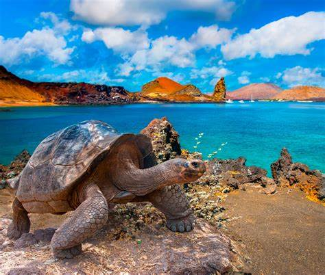

Destino Turistico: Islas Galapagos
Las Islas Galapagos son un archipielago volcanico ubicado en el oceano Pacifico, a unos 1,000 kilometros de la costa de Ecuador. Este destino es famoso por su biodiversidad unica, que inspiro la teoria de la evolucion de Charles Darwin. Las islas albergan una gran variedad de especies endemicas, algunas de las cuales no se encuentran en ningun otro lugar del planeta.
Las Islas Galapagos fueron declaradas Patrimonio de la Humanidad por la UNESCO en 1978 debido a su importancia ecologica y la riqueza de su vida silvestre.
Principales atractivos:
- La fauna unica, incluyendo tortugas gigantes, iguanas marinas, lobos marinos y aves como el pinzon de Darwin.
- El snorkeling y buceo, que permite explorar la vida marina, incluidos tiburones, rayas, tortugas y una gran variedad de peces tropicales.
- Las caminatas por los volcanes, donde los visitantes pueden explorar los paisajes impresionantes y los craters activos.
- Las playas de arena blanca, ideales para relajarse o practicar deportes acuaticos.
- Los tours guiados en barco entre las islas, que permiten descubrir los diferentes ecosistemas y especies endemicas de cada isla.
Instrucciones para visitar:
1. Llega a las Islas Galapagos desde el continente ecuatoriano, volando desde Quito o Guayaquil.
2. Visita las islas principales, como Santa Cruz, San Cristobal y Isabela, que son las mas accesibles para los turistas.
3. Toma un tour guiado o realiza actividades de snorkeling, buceo o senderismo.
4. Asegurate de seguir las reglas de conservacion del parque nacional, como no alimentar a los animales ni acercarse demasiado a ellos.
5. Lleva ropa comoda, protector solar y camara para capturar los momentos inolvidables.
